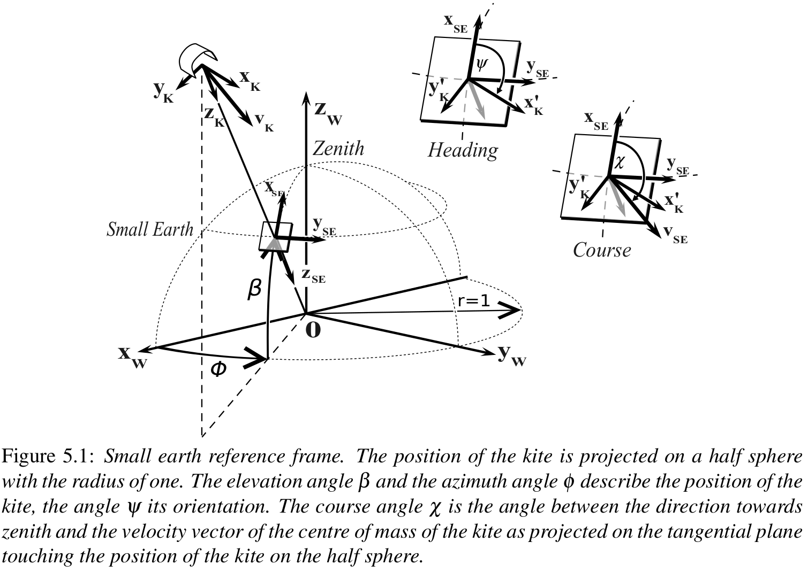

Reference frames
Positions, velocities and forces in space are ENU. Everything in SysState that is resolved in a body frame — the orientation, the turn rates, the aerodynamic loads — is KA. KS appears at the edges only, and is converted on the way in.
Kinds of frame
A world frame is earth-fixed: its axes keep pointing the same way whatever the kite does. Positions, velocities, wind and forces drawn in space are expressed in one.
A body frame is attached to the kite and turns with it, so each of its axes points somewhere different in the world at every instant. Aerodynamic forces and moments, turn rates, angle of attack and side slip are expressed in one.
An orientation is the rotation from a body frame to a world frame; its columns are the body axes written in world coordinates. Converting one rotates the world frame and the body frame, which is what fromKS2KA and fromKA2KS do. Converting a body vector rotates the body frame only, by fromKS2KA_body or fromKA2KS_body, and converting a world vector rotates the world frame only, by fromENU2NED or fromNED2ENU. Three kinds of quantity, three rules: using the wrong one is a bug that no type catches.
World frames
The origin of these frames is the tether exit point of the ground station.
The ENU (east, north, up) reference frame is the simulation frame. Every position, velocity and world-frame force is expressed in it. It is defined as follows:
- x: east
- y: north
- z: up
The NED (north, east, down) reference frame, called EX (Earth Xsens) in the code, is the convention the Xsens IMU reports in and the frame a KS orientation is reported against. Nothing is positioned in it. It is defined as follows:
- x: north
- y: east
- z: down
The NWU (north, west, up) reference frame is called EG (Earth Groundstation) in the code. It is defined as follows:
- x: north
- y: west
- z: up
The W (Wind) reference frame is the frame the flight path controller works in, shown in the figure below. It is defined as follows:
- x: downwind
- y: cross-wind, to the left when looking downwind from above
- z: up
Body frames
Two body-frame conventions occur in the OpenSourceAWE packages, and the enum FrameConvention names them. A KA orientation is reported against ENU, a KS orientation against NED.
The KA (kite aero) reference frame is the convention of SysState and of every calculation in this package. Like KS it is a rotating reference frame, and its origin is the tow point, which is the KCU for a model that has one. It is defined as follows:
- x: from leading edge to trailing edge
- y: spanwise, from the left to the right wing tip
- z: up
These are the aerodynamic axes, so drag is +x, side force +y and lift +z, and at zenith they line up with ENU. Geometry must satisfy x · (TE − LE) > 0 with y spanwise positive.
The KS (kite sensor) reference frame is the sensor-fixed reference frame, reported against NED because that is the convention the Xsens IMU reports in. Its origin is defined by the location where the sensor is mounted. In the simulation this is equal to the K (kite) reference frame, which is defined as follows:
- x: from trailing edge to leading edge
- y: to the right looking in flight direction
- z: down
KS is used in exactly three places:
- at sensor ingest;
- inside
KiteModels, whose solver and aerodynamics are built on it; - in
euler_KS, which reports roll, pitch and yaw against NED.
Converting an orientation between the two conventions is fromKS2KA or fromKA2KS, which rotate the world frame and the body frame. A body vector takes fromKS2KA_body, which rotates the body frame only: the half turn about the shared spanwise axis leaves y alone and changes the sign of x and z. A world vector is neither and takes fromENU2NED or fromNED2ENU, which rotate the world frame only.
The SysState fields resolved in the body frame, and therefore KA, are turn_rates, aero_force_KA, aero_moment_KA and turn_rate_x/_y/_z, alongside the orientation itself. load_log converts all of them when it reads a KS log, so a state that comes out of a load never mixes the two.
The neighbouring packages
| package | body frame | established by |
|---|---|---|
| SymbolicAWEModels.jl | KA | computed from both shipped kites |
| ASKITE | KA | CAD identical to V3Kite.jl's |
| KiteModels.jl | KS | kite_ref_frame, z down the tether |
| EKF-AWE | KS | roll, pitch, yaw against NED |
SE frame
The SE (Small Earth) reference frame is neither a world nor a body frame: it is the plane tangential to the unit half-sphere around the ground station, touching it at the position of the kite. It follows the kite's position but not its attitude, so a direction expressed in it varies only with the attitude. It is defined as follows:
- x: towards zenith, so the heading is zero when the nose points up the sphere
- y: completing the right-handed set
- z: from the kite back towards the ground station
An SE vector carries no body convention. A vector is resolved to ENU first, then passed through fromENU2EG, fromEG2W and fromW2SE, none of which take a convention. fromENU2NED converts between those two frames only and does not apply to an SE vector. See Small earth reference frame for the role of the frame.
Wind direction
The upwind_dir (degrees) is the direction the wind is coming from. Zero is at north; clockwise positive. Default: -90, wind from west.
The upwind_elevation (degrees) is the angle between the upwind direction and the east-north plane (ENU frame). Default: 0, horizontal wind.
The same wind is also available as the vector wind_vec (m/s, ENU frame), and use_wind_vec says which of the two is the input. With false, the default, the input is v_wind, upwind_dir and upwind_elevation and wind_vec is derived from them; with true it is the other way round. Assigning to the derived side throws an ArgumentError, so set.wind_vec = [10, 1, 0] needs set.use_wind_vec = true in front of it.
Elevation and azimuth
The position of the kite can be described with two angles, the azimuth angle φ and the elevation angle β .The elevation angle is zero when the height of the kite is zero, and 90° when it is at Zenith. Three azimuth angles are used, the azimuth angle in the wind reference frame and $\mathrm{azimuth\_east}$ and $\mathrm{azimuth\_north}$. The azimuth angles in wind reference frame and $\mathrm{azimuth\_north}$ are defined positive anti-clockwise when seen from above, $\mathrm{azimuth\_east}$ is defined positive clockwise when seen from above. In the log file and the system state $\mathrm{azimuth}$ in wind reference frame is used (for KiteUtils 0.8.2 and higher).
The function calc_heading() uses this same wind-frame azimuth convention.
Orientation of the kite
The orientation is stored as a quaternion, and can be reported as roll, pitch and yaw.
Quaternions stored in SysState are KA: the body-to-ENU rotation of the aft-right-up body frame. Its columns are the body axes expressed in ENU, so -x is the nose, which is what calc_heading() is built on. It is the only orientation the state carries.
Roll, pitch and yaw are not stored. euler_KS(ss.orient) reports them, measured against NED, that being the convention of the Xsens IMU and of flight test data. Yaw is zero at north, clockwise positive seen from above. The function quat2euler() expects a KS quaternion, so it is only correct on the result of fromKA2KS(q).
The origin of the body frame is the tow point, the KCU for a model that has one. It does not affect the orientation, a rotation being independent of where it is anchored.
Control inputs
see: Reference frames and control inputs
Small earth reference frame
To understand how the control system is working it is necessary to introduce the small earth reference frame. This name is chosen as an analogy to the geographic coordinate system, describing a position on planet earth: It makes clear to the reader that navigation methods, used on earth (like great circle navigation to find the shortest way between two points on the sphere) can also be used to navigate kites. The position of the kite and the ground station are measured in the "Earth Centered Earth Fixed" reference frame. The position of the kite relative to the ground station has to be converted into the "Wind Reference Frame" ($x_w , y_w , z_w$) as shown in Fig. 5.1.
The origin of the wind reference frame is placed at the anchor point of the tether and its $x_w$ axis is always pointing in the direction of the averaged wind velocity. To obtain the coordinates of the kite in the small earth reference frame its position is projected on the unit sphere around the origin of the wind reference frame. Now, the position of the kite can be described with two angles, the azimuth angle φ and the elevation angle β . The movement of the kite in the direction of the tether is determined by the winch controller and can be ignored by the kite controller. The objective of the flight path controller as described in this thesis is to fly the kite on a prescribed trajectory that is adapted to the wind conditions.

In Fig. 5.1 the vectors $x_k, y_k$ and $z_k$ define the body-fixed kite reference frame in the KS convention. In this chapter, the combination of the wing and the kite control unit (KCU) is seen as kite. The $y_k$ axis is defined by the vector from the left to the right wing tip, the $z_k$ axis is pointing downwards from the position of the kite parallel to the upper part of the tether, and the $x_k$ axis is orthogonal to $y_k$ and $z_k$ . The heading angle ψ is the angle between the direction towards zenith and the vector $x_k$ as projected on the tangential plane touching the position of the kite on the half sphere. If tether is not straight, $z_k$ and $z_{SE}$ are not aligned.
Fechner U. A Methodology for the Design of Kite-Power Control Systems. 2016. 212 p. https://doi.org/10.4233/uuid:85efaf4c-9dce-4111-bc91-7171b9da4b77